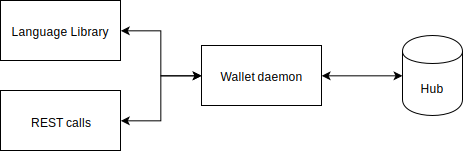
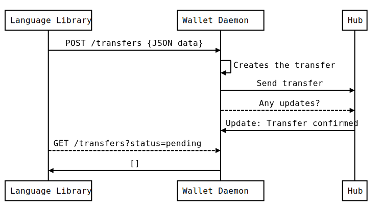

Liquidity SDK¶
Liquidity SDK allows you to easily integrate offchain payments and exchanges within your application. It is divided in two different parts. The wallet daemon is a self-hosted liquidity wallet management tool for your transactions. The Liquidity language library allows you to access wallet daemon directly from your favorite language or from REST endpoints.
Architecture¶
Liquidity is build around hubs creating a link between blockchain and offchain transaction ecosystem. Blockchain remains the ultimate source of trust in case of conflict while hub manage offchain state of network participants. To leverage the complexity of an active state management, the wallet daemon is querying the hub to get its last state. It serves this up-to-date state through REST endpoint the language library is using.
To give a more concrete example, the flow to perform a full transfer to a specific user is given below. Language Library is considered to be the end user.
- The user ask the daemon to perform a transfer
- The daemon creates the transfer
- The daemon sends the transfer
- At regular interval, the daemon checks if the hub has included the transfer
- When the transfer is included in an update, the daemon notice it
- When the user checks if there is any pending transfer, none is returned because its transfer has been performed
If something bad happends during the process, the user is able to contact the daemon and perform security associated operations.
Wallet daemon¶
Liquidity network provides you with a non custodian payment system. Its core component is the wallet daemon through which the user can perform operations on the network while remaining in control of its funds. For applications looking to implement offchain payments, this component handles communication with liquidity hub, checking it doesn’t behave badly.
In term of technology, the daemon is a docker container that synchronises with the hub and provides various endpoints. All endpoints are using the internal state of the daemon. Because the daemon is hosted by the user and has the knowledge of its private key, it is able to sign offchain transfer and leverage the complex verification process that takes place.
Language library¶
Liquidity language library is a convenient way to communicate with the daemon. It wraps the provided REST API using language specific features. For now, the language library is only available for Node.JS. If you have build an implementation for a language you love, you can submit an issue on liquidity sdk repo.
In the transfer sequence described above, the user has to call the daemon on a regular basis in order to know if it still has any transfers pending. This active wait is not convenient and doesn’t integrate well within an application flow. To leverage it, Node.JS library has created a transfer method that returns a promise which is resolved when the transfer has been performed.
const liquidity = require('liquidity-sdk')
const to = '0x627306090abaB3A6e1400e9345bC60c78a8BEf57'
const amount = 32
const performedTransfer = await liquidity.transfers.send(to, amount)
console.log(`Tranfer has been ${performedTranfer}`)